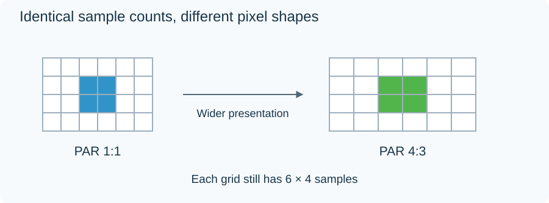

Video Pixel Aspect Ratio
A 1440 × 1080 picture shown with square pixels is 4:3. To present the same grid as 16:9, each horizontal sample interval must appear wider. The required multiplier is:
(16/9) ÷ (1440/1080) = 4/3.
That multiplier is the pixel aspect ratio (PAR): the intended width of a picture sample relative to its height. It describes presentation spacing, rather than a little physical rectangle stored in the file.

The two grids contain the same number of samples. Only their presentation spacing differs.
At PAR 4:3, the equivalent square-pixel display width is 1440 × 4/3 = 1920, with the height still 1080. A face that looked too thin when the samples were treated as square takes its intended shape when the spacing is applied.
Two equivalent representations
The intended picture can be carried in either of these forms:
| Representation | Stored grid | PAR | Display shape |
|---|---|---|---|
| Anamorphic grid | 1440 × 1080 | 4:3 | 16:9 |
| Resampled square-pixel grid | 1920 × 1080 | 1:1 | 16:9 |
The first form keeps 1,440 horizontal sample positions and relies on presentation information. The second calculates 1,920 output samples from those positions. Resampling makes the dimensions convenient for square-pixel display, but the source still supplied only 1,440 independent horizontal observations.
A metadata correction changes the interpretation of the existing samples. A resampling operation changes the array of sample values. These operations need to be distinguished during conversion so the intended display shape survives.
For example, after resampling this source to 1920 × 1080 square pixels, carrying its old PAR 4:3 into the output would make the picture wider again. The output geometry and output PAR must describe the same representation.
Work backward from a known frame shape
For a rectangular, unrotated frame without an additional display crop:
PAR = intended DAR ÷ (stored width ÷ stored height).
If a full 720 × 576 raster is intended as 4:3, the calculation gives (4/3) ÷ (720/576) = 16:15. This is a full-raster numerical example. Some standard-definition workflows describe a smaller active region instead, so that region must be used in the calculation when it is the signaled display rectangle.
PAR often appears as SAR, sample aspect ratio, in FFmpeg and media inspection. Both refer to the sample's presentation proportions in that terminology. The file's dimensions, its aspect signaling, and any crop together define the rectangle whose shape the player presents.